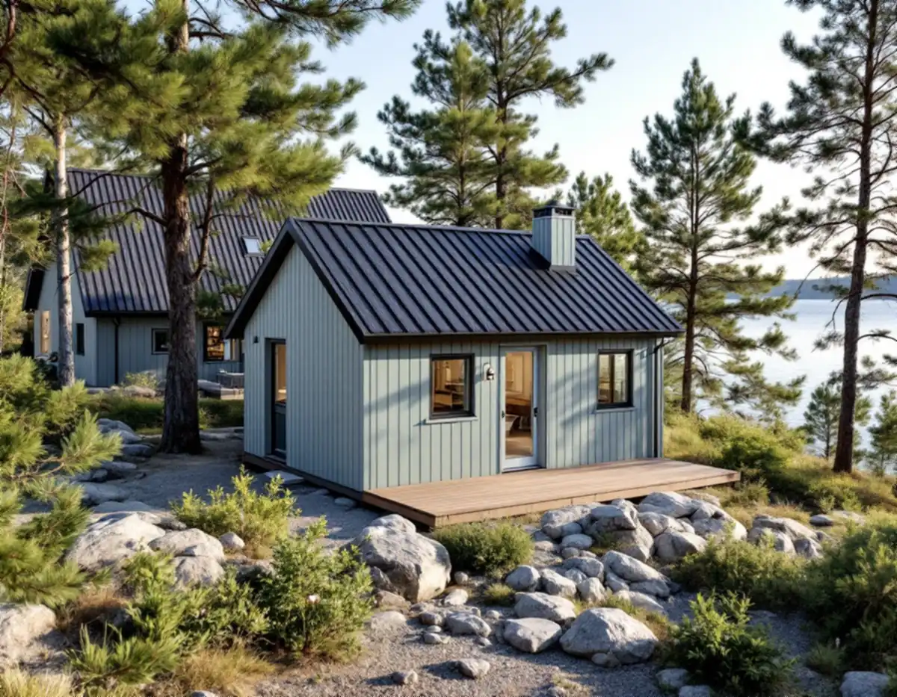
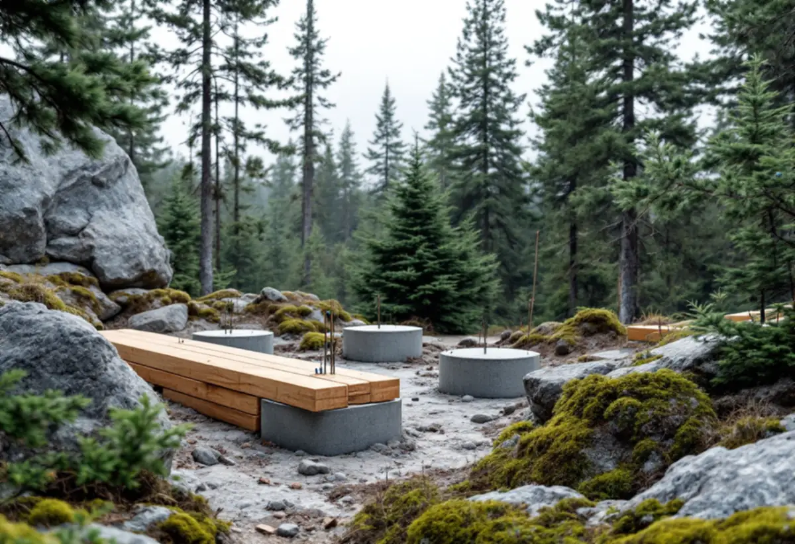

Tomten
Plan eller inte, kulturmiljökartan och avståndet till strand och gräns.
Många fritidshusområden på Värmdö håller på att bli permanentområden, och ett litet hus på tomten är ett sätt att få plats med fler. Geal Entreprenad AB bygger komplementbostadshus nyckelfärdigt och reder ut plan, kulturmiljö, strand och avlopp innan vi ritar.

SCB räknade 14 709 fritidshus på Värmdö 2025, näst flest i landet. Kommunens broschyr om fritidshusområden i förändring beskriver hur tusentals fastigheter i områden med många permanentboende ska planläggas och få kommunalt vatten och avlopp. Områdena som går först kallas prioriterade förändringsområden och pekas ut i översiktsplanen Värmdö 2035. Bland riktlinjerna står att fastighetens storlek bedöms utifrån områdets karaktär och att det inom fastigheten ska finnas plats för parkering, ett möjligt attefallshus och bergvärme.
Så länge området saknar detaljplan gäller gränserna utanför plan: 50,0 kvadratmeter byggnadsarea, 4,5 meter till nocken och 65,0 kvadratmeter lovfritt på tomten. När den nya planen fått laga kraft gäller 30,0, 4,0 och 45,0 i stället. Står huset redan där när planen kommer räknas det in i potten. Att bygga före eller efter planen är därför ett val värt att göra medvetet, och vi går igenom vad det betyder för din tomt.

Värmdö kommun skriver att det finns 14 områden av riksintresse och cirka 55 utpekade kulturmiljöområden i kommunen, och att alla räknas som särskilt värdefulla. Region Stockholms sammanställning nämner bland andra Gustavsberg (AB 56), Sandhamn–Grönskär (AB 610) och delar av Möja (AB 616), och räknar Gustavsberg till de riksintressen i länet som är särskilt känsliga för förändring.
I kommunens information om de nya reglerna står att det inom kulturhistoriskt värdefulla områden och riksintressen för kulturmiljövården gäller lovplikt, och att kulturmiljökartan visar om fastigheten berörs. Kommunen ber dig tänka särskilt på material, färger, takets form och lutning och byggnadens placering, och kommunantikvarien hjälper till med råd. Kommunen påminner också om att strandskyddsdispens eller tillstånd från länsstyrelsen kan krävas även när åtgärden inte kräver bygglov.
Kommunen sammanfattar två saker som inte ändrades den 1 december 2025: utan tillstånd får du inte bygga närmare än 4,5 meter från tomtgränsen eller inom 100 meter från strand. På en strandnära skärgårdstomt kan det vara den andra gränsen som styr. Strandskyddet regleras i miljöbalken och förbjuder nya byggnader inom strandskyddsområdet, så ett lovfritt hus kräver i regel dispens med särskilda skäl.
Placeringen avgör ofta om dispens alls är möjlig. Vår bedömning är att ett hus på den redan använda delen av tomten, bakom huvudbyggnaden sett från stranden, har bättre förutsättningar än ett hus på en orörd udde. Närmare än 4,5 meter från gränsen krävs skriftliga medgivanden från grannarna. Vill du i stället bygga ut huvudbyggnaden finns tillbyggnad på Värmdö.
Värmdö kommun skriver att du behöver ansöka om tillstånd om du vill ansluta en eller flera byggnader till din befintliga avloppsanläggning. Ett attefallshus med toalett, dusch och kök som kopplas till villans anläggning är just ett sådant fall. Tillståndet gäller exakt den tekniska lösning och den placering som visas på situationsplanen, och du ska vänta på kommunens skriftliga beslut innan arbetet börjar.
Kommunen kan ge en preliminär bedömning av vilken skyddsnivå som gäller på fastigheten, men inte råda om vilken anläggning du ska välja. Anläggningen för vatten och avlopp i huset anmäls även till byggnadsnämnden innan den görs. Ligger tomten i ett förändringsområde där kommunalt VA ska byggas ut kan det påverka vilken lösning som är rimlig i väntan på ledningarna. Måtten och paragraferna i sin helhet finns i nya regler för attefallshus.
Plan eller inte, kulturmiljökartan och avståndet till strand och gräns.
Hur stort huset får bli i dag och efter en ny detaljplan.
Befintlig anläggning, ny lösning eller väntan på kommunalt VA.
Dispens, avloppstillstånd och anmälan med ritningar.
Grund på berg eller mark, stomme och installationer.
Genomgång och de beslut och handlingar du ska spara.
Rotavdraget är till för arbete på en befintlig bostad. Skatteverket skriver att det inte går att få rotavdrag för att bygga en helt ny bostad, och att ett helt nytt hus eller en liknande fristående byggnad på småhustomten inte ger avdrag. Ett komplementbostadshus är nybyggnad, så vi lämnar priset utan rotavdrag.
Storlek, grundläggning på berg, avloppslösningen, hur långt ledningar och el måste dras och om material kan köras fram eller måste bäras eller fraktas sista biten. Efter ett kostnadsfritt platsbesök får du ett skriftligt kostnadsförslag.
Komplementbostadshus på tomten.
Attefallshus →Takbyte, takbesiktning och plåtarbeten.
Takläggare på Värmdö →Skärgård, vind och fritidshus.
Takrenovering på Värmdö →Brunnsvatten, salt och eget avlopp.
Badrumsrenovering på Värmdö →Byggrätt, PFO-områden och strandskydd.
Byggföretag på Värmdö →Sommarvillor, skyddade hus och helårsboende.
Fasadrenovering på Värmdö →Gustavsbergs bevarandevärda fönster.
Fönsterbyte på Värmdö →Fritidshus som blir permanentbostäder.
Golvläggare på Värmdö →Fritidshus, eget avlopp och Gustavsberg.
Köksrenovering på Värmdö →Skärgårdshus, fritidshus och bruksmiljö på Värmdö.
Målare på Värmdö →Plåttak och beslag på Värmdö.
Plåtslagare på Värmdö →Fritidshus som blir helårshus.
Snickare på Värmdö →Fritidshusplaner och lovfria 30 m².
Tillbyggnad på Värmdö →